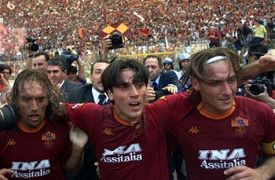

Web de la ASROMA
Toda la Roma 100% en español
 Marco Villuendas Tomás
Marco Villuendas Tomás
Hístoria de la AS ROMA
La AS Roma se fundó el 22 de agosto de 1927 mediante la fusión de tres equipos de la ciudad: Roman Football Club, Fortitudo Pro Roma y Alba-Audace. El motivo de la fusión surgió a causa de que el Partido Fascista quería dar a la capital de Italia un único y fuerte equipo que pudiera ser capaz de contrarrestar el dominio de los equipos del norte (Juventus, Inter y Milan). El primer presidente del club fue el miembro del Partido Fascista, Italo Foschi. En dicha fusión debía formar parte también otro equipo de Roma, la Lazio, peró se negó.
Los primeros jugadores referentes y destacados del equipo fueron el goleador Rodolfo Volk y el capitán Attilio Ferraris IV.
En su primera temporada de 1927/28, el equipo ganó su primero trofeo, la Copa CONI.
La Roma fue subcampeón en la Serie A en las temporadas 1930/31 y 1935/36. El club ganó su primer título de Serie A en la temporada 1941/42 después de un largo duelo con el Torino FC.
En la temporada 1950-51, llegó decimonoveno y descendió a la Serie B. Al año siguiente, fue primera en Serie B y regresó a Serie A, Siendo esta la unica vez que descendio
En 1953, se trasladó para disputar sus partidos al Estadio Olimpíco y en la temporada 1960-61 ganó su primer trofeo internacional, la Copa de Ferias. En la 1971/72 ganó el Trofeo Anglo-Italiano, pero poco después comenzó la era de la "Rometta", llena de temporadas mediocres y acompañada por una crisis económica que impidió a los administradores del club aumentar la estructura organizativa de éste.
En 1979, la sociedad fue comprada por el rico empresario Dino Viola que con buenos fichajes (Falcão, Toninho Cerezo, Herbert Prohaska, Agostino Di Bartolomei, Carlo Ancelotti, Franco Tancredi, Pietro Vierchowod, Roberto Pruzzo y Bruno Conti) hizo un equipo muy competitivo. En 1980/81, la Roma fue subcampeón de Liga después de un largo duelo con la Juventus de Turín (en el partido final, el árbitro anuló un gol regular al romanista Turone) y en 1982/83 ganó su segundo título italiano.
En la siguiente temporada el equipo capitalino participó en la Champions League y después de haber eliminado a Göteborg AIS, CSKA Sofia, Dynamo de Berlín y Dundee United FC, cayó derrotado en la final ante el Liverpool FC (5-3 en tanda de penaltis tras el empate 1-1 en tiempo reglamentario).
17 de junio de 2001: Roma gana su tercer campeonato de la mano de jugadores como Totti, Montella y Batistuta (en la imágen).
Después de la muerte de Viola en 1991, la sociedad gestora del club fue víctima de una nueva crisis económica que desembocó en la venta de los mejores jugadores para obtener liquidez.
En 1994, Franco Sensi compró la sociedad salvándolo de la bancarrota y comenzó a crear un equipo muy fuerte con la incursión de jóvenes como Giuseppe Giannini, Francesco Totti, Di Biagio y Zanetti y con los fichajes de muchos campeones como Zago, Cafú, Samuel, Candela, Emerson, Zebina, Tommasi, Batistuta y Cassano. A la cabeza del equipo estuvieron los entrenadores: Carlo Mazzone (94-96), Zdeněk Zeman (97-99) y Fabio Capello (2000-04).
En la temporada 2000-01, el equipo "giallorossi" ganaron su tercer Scudetto (28 años después)2 y también la Supercopa de Italia. En 2004, Capello se marchó a la Juventus y con él los jugadores Emerson y Zebina. Tras la marcha de éstos, el equipo notó su falta y no hizo una buena temporada en la 2004/05. Pero tras el escándalo del Calciopoli en 2006, el equipo con Luciano Spalletti como entrenador y con un organización plagada de jóvenes, volvió a estar listo para luchar por el título.
En 2007, el capitán e ídolo del equipo, Francesco Totti , ganó la Bota de Oro como mejor goleador europeo.
El 24 de mayo del 2008, la Roma disputaria la final de la Copa de Italia frente al Inter de Milán en el Estadio Olímpico, la Roma ganaría por 2-1 con goles de Philippe Mexès Y Simone Perrotta.
En el verano del 2008, el presidente Franco Sensi murió a la edad de 82 años después de 14 temporadas como presidente, en las que la AS Roma ganó: 1 Campeonato Italiano, 2 Copas de Italia y 2 Supercopas Italianas. La presidencia pasó a manos de su hija, Rosella Sensi.